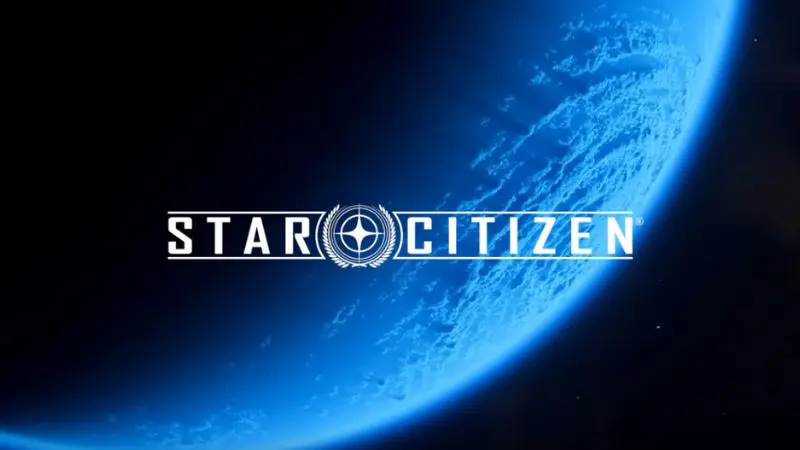
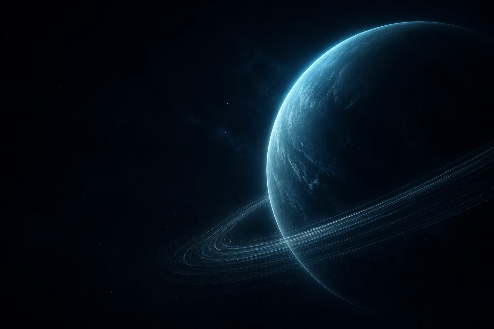
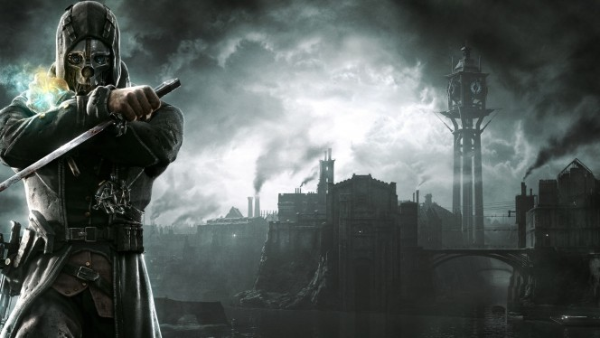
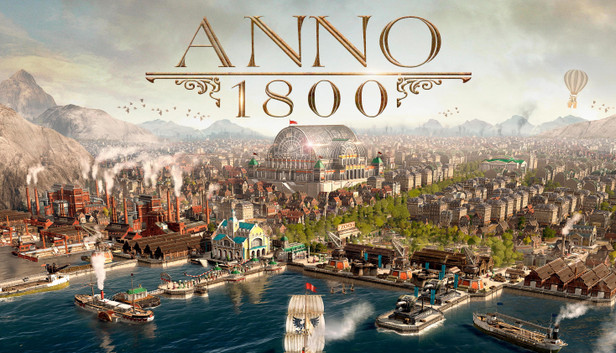

01 / EXPLORERStar Citizen
L’ambition de la simulation. Des systèmes interconnectés et la liberté de s’y perdre.

THIBAUT PATRY · DÉVELOPPEUR JEUX VIDÉO
Je code des systèmes, j’explore des idées.
Et quelque part entre les deux, je crée des mondes.
01 / QUELQUES ESCALES
PROJET SCOLAIRE · GAMING CAMPUS
Une arène spatiale rétro. Des vaisseaux, du réseau et du gameplay en temps réel. Un terrain d’exploration pour faire dialoguer les systèmes.
Explorer le projet02 / DERRIÈRE LE CLAVIER
Hello, moi c’est Thibaut.
J’étudie le développement informatique, option jeu vidéo, au Gaming Campus à Lyon. Ce qui me passionne ? Les systèmes qui interagissent, la simulation et ces petits détails qui rendent un monde vivant.
J’aime l’espace, prendre le temps et me perdre dans un univers. C’est aussi ma façon d’aborder la création : explorer, comprendre, puis construire.

01 / EXPLORERL’ambition de la simulation. Des systèmes interconnectés et la liberté de s’y perdre.

02 / EXPÉRIMENTERDes mécaniques qui se répondent. Et toujours une autre manière de jouer.

03 / CONSTRUIRELe plaisir de comprendre un système, d’équilibrer ses ressources et de le voir grandir.
03 / PROCHAINE DESTINATION
Un projet, une opportunité, ou simplement l’envie
de parler jeux vidéo et nouveaux mondes.